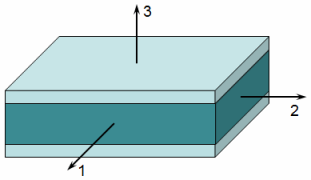

The core ply material defines the NX material and the strength correction factor for the core ply when you want NX Laminate Composites to compute core shear failure metrics.
|

|
123 indicates the coordinate system for the core ply.
The NX material for the core ply can be either isotropic or orthotropic. The strength correction factor can be either constant or a function of the ply thickness.
|
Example |
You create two different laminates both of which have a core ply that references the same Ply Material of type Core. The selected core ply material has the following strength correction factor function: SCF = 5 x t where t is the core ply thickness.
Under the same loading condition, the failure index for the core ply is different for the two laminates. |